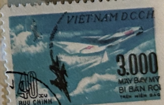
| SOURCE | TITLE| IMAGE MATCH | click to source page |
| eBay | Vietnam War Viet Kong Anti Airforce in attack stamp 1966 A-2 | eBay | 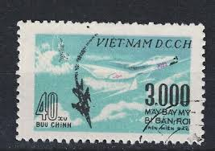 |
| Shutterstock | Vietnam Circa 1964 Stamp Printed Vietnam Stock-foto 97492967 | Shutterstock | 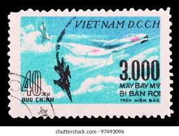 |
| eBay | Vietnam VC 1968 Shot Down 3,000th US Airplane CTO Sheet of 100 Stamps. Scott 508 | eBay | 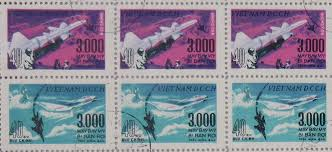 |
| Alamy | 3000th US aircraft brought down over North Vietnam, Vietnam war, postage stamp, Vietnam, 1968 Stock Photo - Alamy |  |
| pjedro.sk | Vietnam War in Vietnamese postage stamps - Pjedro Imagination | 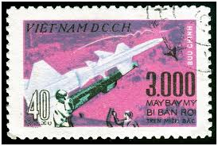 |
| eBay | Vietnam Stamp 1970s.(1) | eBay | 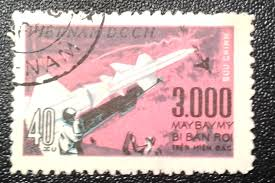 |
| Stamp Community Forum | Vietnam Postal History During The Vietnam War - Page 7 - Stamp Community Forum | 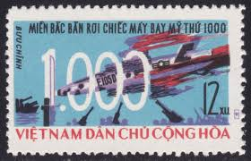 |
| Alamy | Postage stamp vietnam north hi-res stock photography and images - Alamy |  |
| eBay | tonythao714 | eBay Stores |  |
| eBay | Vietnam,DR #507-8 unused no gum NGAI e21.1 12755 | eBay |  |
| eBay | Diners Club |  |
| Delcampe | Vietnam - VIETNAM DCCH USED STAMPS 2 ARMS | 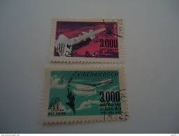 |
| Free Malaysia Today | North Vietnam's propaganda stamps tell of a horrific war | FMT | 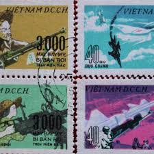 |
| eBay | Military, War Block Vietnamese Stamps for sale | eBay | 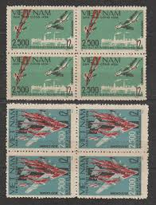 |
| eBay UK | Vietnam,DR #474-75 used e21.1 12751 | eBay UK | 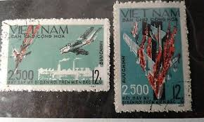 |
| eBay | Vietnam War Viet Kong Anti Airforce in attack stamp 1966 A-2 | eBay | 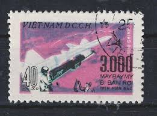 |
| Shutterstock | Postage Stamp Vietnam 1966 1000th Us Stock Photo 278244665 | Shutterstock |  |
| North Vietnam 1967. Do you have any stamps showing combat issued in war time in your collection? : r/philately | 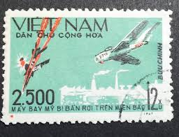 | |
| eBay | 1965 North VN Block 4 Stamps 1000th US Warplane Shot Down Sc # 423 Cto NH | eBay |  |
| eBay | D.R. VIETNAM SCOTT 423 USED F/VF - 1966 12xu MULTI-COLOR ISSUE | eBay |  |
| Alamy | 1500th US aircraft brought down over North Vietnam, F-4 in flames, Vietnam war, postage stamp, Vietnam, 1966 Stock Photo - Alamy | 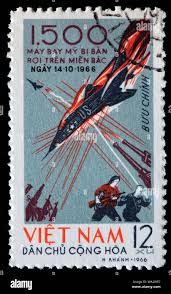 |
| Freestampcatalogue.com | Stamps from Vietnam - Freestampcatalogue.com - The free online stampcatalogue with over 500.000 stamps listed. | 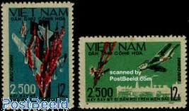 |
| eBay | Vintage stamps, Lot of 5, used, Vietnam, Dan Chu Cong Hoa, 12xu, 20xu, 30xu | eBay | 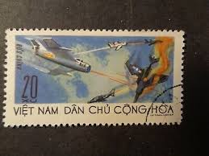 |
| Woman gathers water and vegetables near B-52 wreckage |  | |
| Shutterstock | Ussr -circa 1980 Ho Chi Minh Stock Photo 104935280 | Shutterstock |  |
| eBay | 1966 North Vietnam Stamps 1000th US Warplane Shot Down Scott # 423 MNH | eBay | 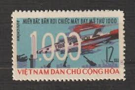 |
| Free stamp catalogue | Stamps from Vietnam - Freestampcatalogue.com - The free online stampcatalogue with over 500.000 stamps listed. | 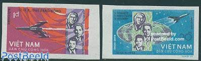 |
| Todocolección | vietnam norte, 1973 aniv.republica democratica - Buy Antique stamps of Vietnam on todocoleccion |  |
| Stamp Community Forum | Vietnam Postal History During The Vietnam War - Page 7 - Stamp Community Forum | 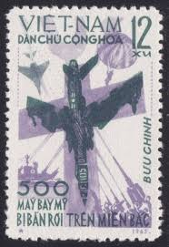 |
| Alamy | Vietnam war 1970 hi-res stock photography and images - Alamy | 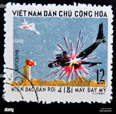 |
| Interesting North Vietnamese propaganda stamp just discovered in a new batch of stamps I received. | 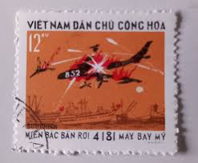 | |
| JF-Stamps | Vietnam | JF Stamps Danmark |  |
| Inspired By Maps | 10 Best Vietnamese War Movies To Better Understand Vietnam's Military History! | 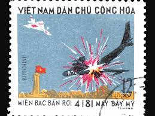 |
| david-hearne.com | Mailing & Stamps in 1967 | 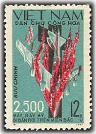 |
| eBay | NORTH VIETNAM Sc 340-41 NH PERF+IMPERF SETS OF 1965 - SPACE - (CJ25) | eBay |  |
| eBay | Vietnam 474-5 Aircraft Used | eBay | 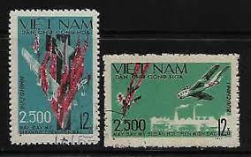 |
| eBay | VIET NAM 1965 The 500th US Warplane Shot Down FU CV $ 4.50 | eBay | 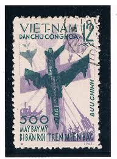 |
| Alamy | Old vietnam postage stamp hi-res stock photography and images - Page 16 - Alamy | 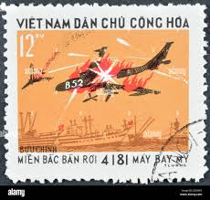 |
| eBay UK | 1966 VIETNAM "1000TH US AIRCRAFT SHOT DOWN OVER NORTH VIETNAM" SG439 USED | eBay UK | 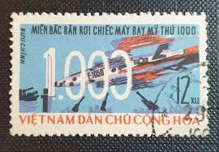 |
| eBay | Rare HTF Vietnam Dogfight B-52 Stamp 1973 Vintage Military Aircraft Postage USED | eBay | 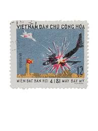 |
| Flickr | kikyo861 | Flickr | 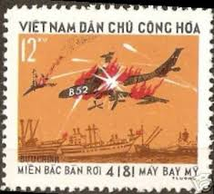 |
| Alamy | 4181st US aircraft brought down over North Vietnam, B-52, Vietnam war, postage stamp, Vietnam, 1973 Stock Photo - Alamy | 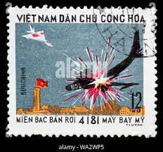 |
| Free stamp catalogue | Stamps from Vietnam - Freestampcatalogue.com - The free online stampcatalogue with over 500.000 stamps listed. | 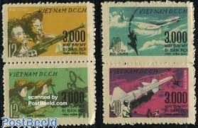 |
| WordPress.com | North Vietnam Propaganda Stamps – The Thrifty Traveller | 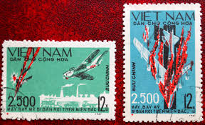 |
| Stamps of two vietnams : r/stampcollecting | 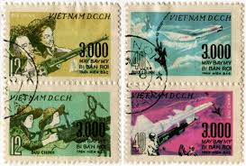 | |
| eBay | Vietnam - 250th U.S Aircraft brought down over North Vietnam 1967 #210 | eBay |  |
| eBay Australia | VIAGEN STORE | eBay Australia Stores | 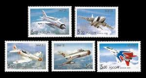 |
| eBay | 1967 North Vietnam Stamps 2500th US Warplane Shot Down Scott # 474-475 MNH | eBay | 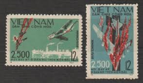 |
| eBay | Mint Never Hinged/MNH Vietnamese Aviation Postal Stamps for sale | eBay | 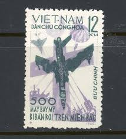 |
| eBay | Vietnam,DR #374 used e21.1 12750 | eBay |  |
| eBay | Russia 2005 Block Of 4 Corner Mig Fighter Jet Fighter Aircraft | eBay | 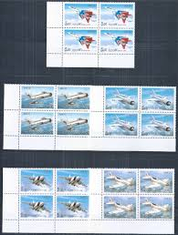 |
| Киевский клуб филателистов | Neuigkeit | Kiews Philatelistisch Klub | 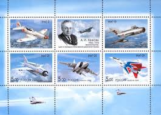 |
| eBay | stamps Russia 2005 SG 7363-7 Mikayan Anniversary Air MNH | eBay | 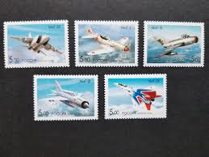 |
| eBay | Vietnam 1965 (359-360) Space | eBay |  |
| eBay | 1967 Sc 474/5,set used f1844 | eBay |  |
| eBay | 1968 NORTH VIETNAM ASIA SET 3000th WARPLANE SHUTDOWN VF MNH | eBay | 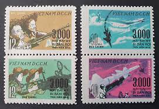 |
| eBay | N.171 -Vietnam- 500th US aircraft brought down over North Vietnam | eBay | 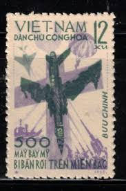 |
| eBay | Vietnam War Poster - Shooting Down Over 3000 Airplanes United States Air Force | eBay | 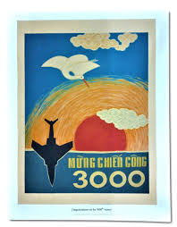 |
| eBay | Vietnam - Scott # 340-341 (Space) MNH | eBay | 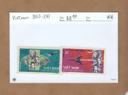 |
| seemystamps.com | See My Stamps! - A Place to Show Off Your Stamp Collection | Page 16 | 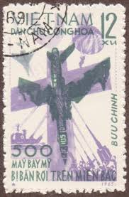 |